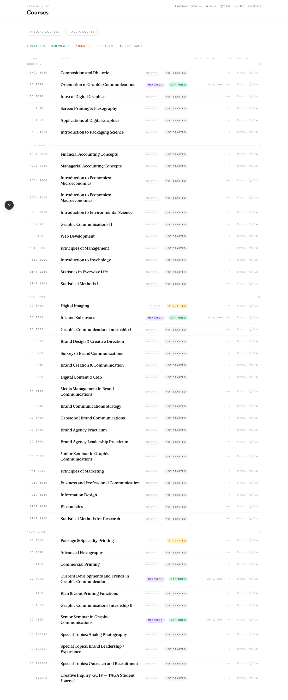
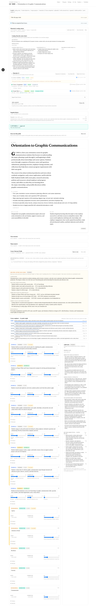
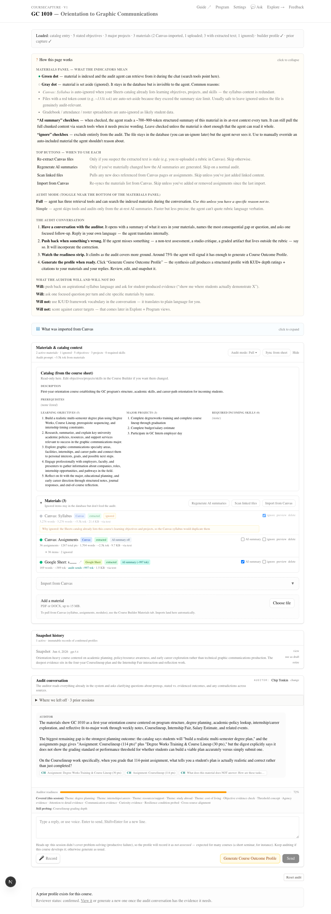
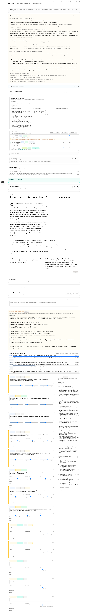

Course Capture — a two-persona walkthrough
An enthusiastic instructor and an adversarial critic walked the live Course Capture interface end to end. The interview at its heart is the part faculty will love. The packaging around it is where they stall.
How this review was run
This was not a heuristic read of the code. The interface was driven the way a faculty member would drive it — a real browser navigating the running application, clicking through the actual workflow, with one genuine round-trip of the AI interview exchanged. Every screen below is a real screenshot from that session.
The evidence from that walkthrough was then evaluated independently by two personas, each with a deliberately different lens:
The enthusiastic instructor
A motivated, non-technical Graphic Communications professor who lives in InDesign, Canvas, and Google Sheets — the kind of early adopter who champions a tool that clicks and quietly abandons one that feels like work. Lens: first impressions, delight, "do I know what to do next," would I actually adopt this.
The adversarial critic
A senior UX evaluator running Nielsen's heuristics hard, specializing in cognitive load, error and empty states, and accessibility. Lens: friction, dead-ends, jargon, screen-reader and keyboard operability, and the exact moment a busy user quits.
Where the two independently agree, confidence is highest — those findings lead the list below. Where they diverge is the most interesting signal of all.
What we walked through
The journey a faculty member actually takes: open the course catalog, find their course, land on the capture page, run the AI "audit" interview, and review the resulting Know / Understand / Do profile.

/courses). Clean and legible: status pills, summary chips ("4 captured · 2 drafted · 40 not started"), one row per course. The entry point that works.
What is genuinely working
Both personas, including the skeptic, singled out the same thing: the interview is the product, and it is good. It read the instructor's actual Canvas assignment and asked a question sharper than most curriculum-committee discussions:
The AI, unprompted "When you grade that 114-point Courselineup assignment, what tells you a student's plan is actually realistic and correct rather than just completed?"
Answering it once moved a live readiness meter from 72% to 84%, reclassified the topic from "still probing" to "covered," and surfaced the next gap to chase — progress visibly pegged to the instructor's own words.

- Grounded & cited. Questions reference real materials, with citation chips — "it actually looked at my course," not a generic survey.
- Visible progress. The readiness meter makes the conversation feel cumulative and earned.
- Transparency. Per-material "why ignored" reasons, in-chat citations, and evidence provenance. The concept is right — the labeling is where it slips (below).
Where faculty stall
Ordered by agreement — both personas flagged the top items independently.
A returning user lands on a status line that reads like a system log, two collapsibles, a materials panel, a token budget, an "Audit mode" dropdown, and four buttons — with the actual interview below the fold and no hierarchy telling them what to do first.
Fix → A goal-first entry: one primary call to action ("GC 1010 has 3 materials loaded — Start the interview"), with materials and settings collapsed behind "Advanced." Collapse the status line to a single expandable row.
The review panel presents ~29 sliders, each equally demanding of attention. The instructor's honest reaction: "the AI just did this — why am I redoing it?" Every score looks equally weighted, so the panel reads as a second job rather than a quick confirmation.
Fix → Collapse each competency to its name + overall band, expanding on click. Surface the AI's top three suggested adjustments and trust the rest by default — let faculty do the 20% of review that carries 80% of the value.

To faculty, "audit" means a financial review or a no-credit enrollment — neither primes the right mindset. Add "auditor readiness," "at-rest context," raw token counts, and "Audit mode: Full," and the user is translating on every encounter. The evidence tags INFERRED ×8 read like an error count, not a transparency feature.
Fix → Rename: audit → interview, auditor readiness → topics covered, and the tags → "AI inferred / Found in materials / You said." Replace token counts with plain-language signals ("Large — may slow the interview").
"~3.5k tok," red/amber token coloring, and the "Audit mode" selector appear before the user needs them, with no plain-language meaning — and the token figure even reads as though something might be billed.
Fix → Demote these behind a "why?" tooltip; expose interview depth at the moment the interview starts, not on the landing.
Accessibility — the critic read the source
Concrete, code-grounded, and several of these overlap items already on the project's known-debt list:
The 29 range inputs have no programmatic label — a screen reader announces a bare "slider" with no competency or dimension name. The evidence chips render as non-focusable <span>s with a hover-only tooltip, so keyboard users can't reach what the tags mean. Validation errors surface raw schema paths (competencies › 3 › evidence_k) instead of human labels.
Fix → Add aria-label per slider (competency + dimension + value); make the evidence chips focusable; map validation errors to plain labels ("Competency #4 — Know evidence is required"). Add a "skip to Save."
Path forward
Split into changes that are small and high-leverage versus ones that warrant a design pass.
| Change | Why | Effort |
|---|---|---|
| Rename the worst jargon (audit → interview; the three evidence tags; token counts → plain language) | Removes the single largest source of friction for non-technical faculty; pure copy change | Quick |
| Goal-first landing — one CTA, collapse density behind "Advanced" | Closes abandon point #1; the first-impression that decides adoption | Quick–Med |
Slider aria-labels + focusable chips + humanized validation errors | Real accessibility; clears existing known debt in one pass | Quick |
| "Thinking…" indicator during the 9–12s AI turns | The interview is loved; a live working signal keeps it feeling responsive (also on the known-debt list) | Quick |
| "Quick review" mode — surface the AI's top-N suggested score adjustments; trust the rest | Closes abandon point #2; turns the 29-slider wall into a confirm-a-few flow | Medium |
| Step separation — Materials → Interview → Review, instead of one long scroll | Reduces cognitive load structurally; relevant content near the top of each stage | Larger |